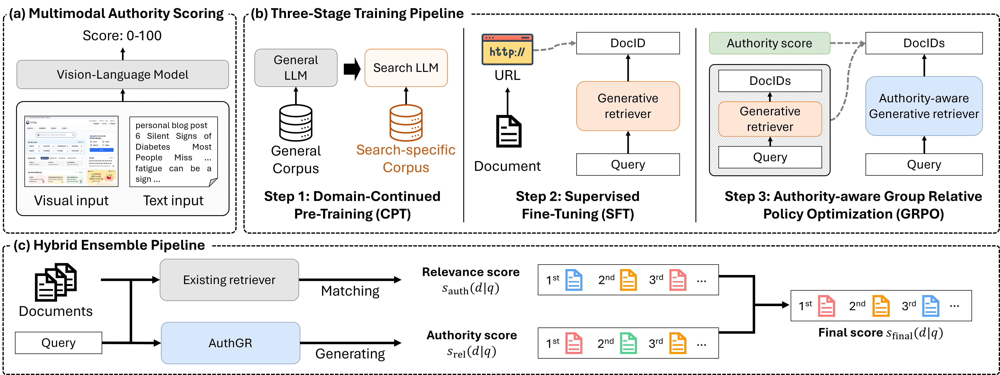
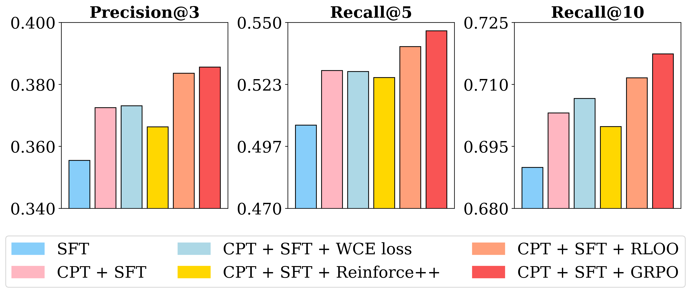

Contents · 9 sections
1What problem is it actually solving?2Overall pipeline: scoring, three-stage training, production fusion3Authority scores: why look at screenshots4Three-stage training: why each step is needed5Production: do not replace, only add a bonus6Experiments: which conclusions hold up7Limitations as I see them8How a recommendation or search team could try this9One-line conclusion and assessmentSHARE
Teams working on web search, high-stakes verticals such as health and finance, or experimenting with generative retrieval should read this, but read it with questions in mind. It answers a practical problem: a generative retrieval model that only learns "query and document are relevant" ranks a topically similar personal blog as high as an official institution's site, so how do you make it prefer trustworthy sources? The core idea in one sentence: a vision-language model (VLM) looks at each website's screenshot and text and gives it an authority score from 0 to 100. That score becomes the GRPO reward for a 3B model that directly generates site domains. In production, the existing ranking stays, and the sites the model generates only get a bonus. Offline P@3 rises from 0.3555 with SFT only to 0.3856, tying the 14B SFT model (0.3856 vs 0.3854); the blind rating goes from 3.06 to 3.41; in the online A/B, click metrics rise 21% to 23%. I think the division of labor is worth borrowing, but the online numbers have an unclear basis and several statistics are inconsistent, so discount them.
What problem is it actually solving?
Generative retrieval (GenIR) does no vector matching; a language model reads the query and directly generates document identifiers (DocIDs), and what it generates is the retrieval result. Existing work optimizes almost only for relevance. In health and finance, that is not enough.
An illustrative example. A user searches "early symptoms of diabetes", with three candidate sources:
| Candidate source (illustrative) | Topical relevance | Source credibility |
|---|---|---|
| Personal blog "6 silent signs of diabetes" | high | low: no citations, page full of ads |
| Diabetes association's official explainer | high | high |
| A top hospital endocrinology department's patient handbook | medium-high | high |
On relevance alone the personal blog may rank first, because its title nearly is the query. The paper's Figure 1 shows exactly this scenario. The authors want the model to prefer the latter two when relevance is similar.

One key setting first: DocIDs are host-level URLs, i.e. site domains. The model generates "plus.gov.kr", not a specific page's full address. The authors argue domains are less noisy and expose source identity directly, which helps learn authority. The cost is that the model recommends "which site to look in", not "which page to read", and offline ground truth is also matched at domain granularity.
Overall pipeline: scoring, three-stage training, production fusion
The paper's Figure 2 shows the whole thing in three parts:

| Stage | Input | Output | Responsible for |
|---|---|---|---|
| Authority scoring | site screenshot + title, body, URL | a 0–100 score and one-sentence reason per site | defining authority |
| CPT (Continued Pre-Training, domain continued pre-training) | 9.85M concatenated "query + URL + title + body" texts | a language model familiar with search data | learning how URLs map to content |
| SFT | 3.95M filtered query and clicked-site pairs | a model that generates relevant domains for a query | learning relevance |
| GRPO | 13,814 high-frequency queries, authority score as reward | a model that prefers high-authority domains | learning authority |
| Hybrid fusion | existing retriever results + 10 generated domains | final ranking | no recall loss, only a bonus |
The key division: relevance is held by SFT and the existing retriever, while authority is injected only in GRPO and the fusion bonus.
Authority scores: why look at screenshots
Why not use link signals such as PageRank? The authors argue links reflect only part of credibility; people judging a site look at content, layout and how many ads there are at once. Promotional sites are good at imitating authoritative wording, so text alone is easy to fool; a screenshot reveals pop-ups everywhere and ads crowding out the content.
Concretely, the VLM gets a rubric covering three dimensions, expertise, officialness and public interest, plus checks for commercial intent and harmful content. These are not scored separately and weighted; they are guidance in the rubric, and the VLM reads everything and outputs a single integer score plus one or two sentences of reasoning. Scores fall into high, medium and low bands, and gambling, adult and spam sites get 0, so the score mainly separates trustworthy sites from promotional ones. The rubric also says explicitly that the screenshot takes priority over other signals.
Is this step reliable? The authors had humans label 40,000 sites on "does this site show expertise". Humans give yes/no while the VLM gives a 0–100 score, so the authors count VLM high scores as "yes" and check agreement. I read "high" as the rubric's top band of 80 and above. Text only gives about 81% agreement, screenshot only about 92%, and both together 97%. ROC-AUC against the binary human labels is 0.915. The appendix gives two examples: a small reseller's site showing a big brand's logo is judged official from the screenshot alone and judged correctly only once text is added; an industry association's official site with little content is judged low-authority from the screenshot alone. This shows screenshot and text are complementary, each making mistakes the other can correct.
Operating cost is covered too. The whole database is re-scored quarterly, about 30M tokens per 100K sites, and between full passes a small weekly incremental update covers sites whose content changed.
Three-stage training: why each step is needed
CPT: first teach the model what URLs mean
A general LLM treats a URL as a random string. CPT (domain continued pre-training) uses standard next-token prediction on search logs concatenated as "query + URL + title + body", so the model learns associations such as "domains ending in .gov are mostly government bodies". In the ablation, the 3B model with SFT only gets 0.3555 P@3, and CPT then SFT reaches 0.3725, about +4.8%, the largest single-step gain of the three stages.
SFT: learn to generate relevant domains for a query
SFT uses real click logs; the target is the clicked site's domain given the query. Click logs have position bias and accidental clicks, so the authors filter twice: drop long-tail queries searched 50 times a week or fewer, then use an auxiliary ranker to remove clearly mismatched query–site pairs, and also exclude low-authority platforms such as personal blogs by rule. About 63% of the roughly 11M raw pairs are removed, leaving 3.95M, and P@3 actually rises from 0.3194 to 0.3725. This shows that for generative retrieval on click logs, data quality matters far more than quantity.
GRPO: authority score as the reward
Why another step after SFT? SFT treats every clicked site the same and cannot learn "which is more trustworthy when equally relevant". The most direct alternative is weighting cross-entropy by authority (WCE, weighted cross-entropy), but that learns per sample and never compares candidates under the same query. GRPO compares within a group: for one query, sample G candidate domains from the current model, use each one's authority score as its reward, and standardize within the group into advantages:
is the authority score of the i-th candidate domain; above 0 means more authoritative than the group average, and the model raises its probability. An illustrative hand calculation: a group of 3 candidates scored 90, 60 and 30 has mean 60 and standard deviation about 24.5, giving advantages of about +1.22, 0 and −1.22. The paper actually uses group size .
A key detail: the reward contains only authority, not relevance. A government site unrelated to the query gets a positive advantage if it is sampled. Relevance is held only by two things: candidates are sampled from a model that learned relevance in SFT, and the KL penalty keeps the model near the SFT model. The hyperparameter study supports this: raising the KL coefficient from 0.01 to 0.2 lifts P@3 by 10.6%, with the best range 0.1 to 0.2. With a loose KL constraint, the model drifts toward sites that are authoritative but irrelevant.
Reward shapes were compared as well: raw scores (linear) beat binarization (1 above 80), five bands and a sigmoid transform, with P@3 of 0.3856, 0.3820, 0.3841 and 0.3833. The gaps are small but consistent, which means keeping fine-grained score differences helps a little.
Production: do not replace, only add a bonus
Replacing the production ranker outright is too risky. Instead, the existing retriever scores each document's relevance as usual, AuthGR generates 10 domains with beam search (width 10), and each gets a bonus by its position:
is the number of generated domains, the domain's position among them, means only documents in the generated domain set get a bonus, and . By hand: the first domain adds 0.6, the fifth 0.36, the tenth 0.06, and ungenerated ones nothing. The benefit is that recall stays entirely with the existing system and AuthGR only reorders. How many positions 0.6 can move depends on the scale of the existing relevance scores: if relevance gaps between candidates are mostly below 0.6, AuthGR's order nearly decides the final ranking.
Experiments: which conclusions hold up
Offline evaluation uses 3,000 expert queries, each with 30 candidates where humans mark the 3 most relevant, scoring P@3 and recall at domain granularity (paper Table 1, excerpt):
| Model | Size | P@3 | R@5 | R@10 |
|---|---|---|---|---|
| GPT-4o (in-context, not fine-tuned) | - | 0.1700 | 0.2348 | 0.3170 |
| LLaMA 3.1 (in-context) | 405B | 0.1413 | 0.1974 | 0.2590 |
| LLaMA 3.2 (SFT) | 3B | 0.3602 | 0.5108 | 0.6892 |
| HyperCLOVAX (SFT) | 14B | 0.3854 | 0.5508 | 0.7289 |
| AuthGR, SFT only | 3B | 0.3555 | 0.5058 | 0.6899 |
| AuthGR, CPT + SFT | 3B | 0.3725 | 0.5293 | 0.7031 |
| AuthGR, full three stages | 3B | 0.3856 | 0.5464 | 0.7175 |
Large models without fine-tuning all fail; the best, GPT-4o, reaches only 0.17 P@3 because they do not know which sites exist in this search engine. Fine-tuned 3B models are more than twice that. AuthGR ties the 14B model on P@3 but is lower on both R@5 and R@10. The paper's "3B matches 14B" holds strictly only for P@3.

The optimizer comparison shows group comparison is the key: on top of CPT + SFT, GRPO lifts P@3 by 3.5% and RLOO (group policy gradient with a leave-one-out baseline) by 3.0%, while WCE (authority-weighted cross-entropy) gives only 0.2% and Reinforce++ (an improved REINFORCE with no value network, using the batch-average reward as baseline) drops 1.7%. The difference is the baseline: GRPO and RLOO use other candidates of the same query as reference, while WCE and Reinforce++ do not compare candidates within a query. Authority did shift: the mean authority of generated results rises from 87.2 to 90.4, and low-authority results scoring 0–60 fall from 118 to 106.
Human blind evaluation compares the production system with the AuthGR-enhanced system on 500 queries, looking only at the top result, rated on a 1–5 scale that considers both whether the information is sufficient and whether the source is credible; 5 means relevant and from a credible source. The average goes from 3.06 to 3.41, +11.4%, which means the fusion bonus really pushes more credible, equally relevant results to first place.
The online A/B ran for a few days in mid-2025 (paper Table 3):
| Metric | Control | Treatment |
|---|---|---|
| Pages with clicks | +0.08% | +21.36% |
| Total document clicks | +0.22% | +22.07% |
| Top-1 CTR | +0.87% | +22.83% |
| Top-3 CTR | +0.81% | +22.68% |
Limitations as I see them
First, the online numbers have an unclear basis. The control column itself changes by +0.08% to +0.87%, which means both columns are computed against some unstated reference period, not treatment versus control. All metrics rising neatly by 21% to 23% is very large for a change that only adjusts a bonus, and whether the test covered all traffic or only high-stakes vertical queries changes how to read it.
Second, several statistics do not match the main table. Per Table 1, the full 3B model and the 14B model are nearly identical on P@3 (0.3856 vs 0.3854) and the 3B is lower on R@5; yet the appendix significance table says the 3B is 2.31% higher on P@3, using 3,041 queries rather than 3,000. The main text and appendix also disagree on the total three-stage gain. This means the claim "significantly beats 14B" cannot be taken at face value.
Third, the reward looks only at the site, not the page or relevance. Authority is site-level, so an outdated notice and a current guideline on the same government site get the same score; and the reward has no relevance term, relying entirely on the KL constraint. Inference is not cheap either: the appendix gives an average latency of 1,225 ms for the 3B model, faster than 2,881 ms for 14B but still slow for a real-time path; precomputing offline for high-frequency queries seems more realistic (my speculation).
How a recommendation or search team could try this
- Start with authority scoring only. Pick a high-stakes vertical, score the top few tens of thousands of sites with a VLM on screenshot plus text, and compare a sample with human labels; if agreement is well below the paper's 97%, the later steps are pointless.
- Before training any generative model, feed the authority score into the existing ranking as a feature or bonus and see whether human ratings of the top result improve. This step alone answers whether the authority signal itself is worth anything.
- If it works, train the generative model in the order CPT, SFT, GRPO. In GRPO, sweep the KL coefficient and monitor relevance metrics to keep the model from drifting toward authoritative but irrelevant sites.
- In the online A/B, report treatment-minus-control differences with confidence intervals and break them down by vertical, to avoid numbers with an unclear basis like the paper's.
One-line conclusion and assessment
The most borrowable part is the division of labor: keep relevance in the existing system and SFT, and treat authority as a separate, swappable signal injected only through group comparison and the final bonus.
| Dimension | Assessment |
|---|---|
| Problem importance | High. Source credibility in health and finance search directly affects user safety |
| Method novelty | Medium. VLM scoring, GRPO and score fusion are off-the-shelf; the novelty is how they combine and using screenshots to judge authority |
| Experimental evidence | Medium-low. Offline, blind and online evaluations exist, but the online basis is unclear and appendix statistics disagree with the main table |
| Engineering cost | Medium-high. About 83 hours of training on 8 A100s, quarterly full re-scoring, about 1.2 s per inference |
| Worth trying | The first two steps, yes. Authority scoring and bonus fusion are cheap and independent; the generative model can come later |
| Fits | web search, high-stakes verticals such as health and finance, and any content retrieval that should rank by source credibility |
How did this read for you?
Hoot made a note. Thanks for the feedback.
One tap, no sign-in; tap again to undo. Only anonymous counts are kept, never who you are.
Related papersMore from Paper Daily
 Retrieval · 2026-08-05SPEAR: Selection-aware Personalized End-to-end Adaptive Rewriting and Retrieval for Community SearchDeep dive: SPEAR: Selection-aware Personalized End-to-end Adaptive Rewriting and Retrieval for Community Search.
Retrieval · 2026-08-05SPEAR: Selection-aware Personalized End-to-end Adaptive Rewriting and Retrieval for Community SearchDeep dive: SPEAR: Selection-aware Personalized End-to-end Adaptive Rewriting and Retrieval for Community Search. Retrieval · 2026-11-13Beyond Query-Item Matching: Personalized Behavioral Relevance Modeling for E-commerce Search via Rubric-Guided Reinforcement LearningE-commerce search usually has a relevance model sort candidates into tiers by text match between query and item, then hands them to a CTR model, so an item the user clearly prefers can get little exposure just because it landed in a low tier. This work from Alibaba's 1688 moves part of personalization into the relevance step: an LLM reads the user's same-day, recent and long-term search and purch…
Retrieval · 2026-11-13Beyond Query-Item Matching: Personalized Behavioral Relevance Modeling for E-commerce Search via Rubric-Guided Reinforcement LearningE-commerce search usually has a relevance model sort candidates into tiers by text match between query and item, then hands them to a CTR model, so an item the user clearly prefers can get little exposure just because it landed in a low tier. This work from Alibaba's 1688 moves part of personalization into the relevance step: an LLM reads the user's same-day, recent and long-term search and purch… Retrieval · 2026-11-13PCG-RAG: Progressive Compositional Grounding for Retrieval-Augmented Generation in Complex Web Question AnsweringComplex web QA often requires first working out who or what several clues describe, then looking up an attribute of it, and a common mistake is to treat a name as settled after only one clue matches. The paper's example is a London power station converted into an art museum: a system that settles on Battersea from London and power station alone retrieves an architect who actually belongs to a dif…
Retrieval · 2026-11-13PCG-RAG: Progressive Compositional Grounding for Retrieval-Augmented Generation in Complex Web Question AnsweringComplex web QA often requires first working out who or what several clues describe, then looking up an attribute of it, and a common mistake is to treat a name as settled after only one clue matches. The paper's example is a London power station converted into an art museum: a system that settles on Battersea from London and power station alone retrieves an architect who actually belongs to a dif… Retrieval · 2026-10-29Tessera: Structure-Completed Evidence Units for Web Retrieval-Augmented GenerationAsk Wikipedia who produced Willy Wonka and the Chocolate Factory, and the answer sits in the producer row of the page's infobox. Text extraction drops the two names in that cell, the reader model sees only the director, and it answers wrong. Tracing answer evidence from page source to reader input over all of English Wikipedia, this paper finds such loss is common: for 7.6% of questions the evide…
Retrieval · 2026-10-29Tessera: Structure-Completed Evidence Units for Web Retrieval-Augmented GenerationAsk Wikipedia who produced Willy Wonka and the Chocolate Factory, and the answer sits in the producer row of the page's infobox. Text extraction drops the two names in that cell, the reader model sees only the director, and it answers wrong. Tracing answer evidence from page source to reader input over all of English Wikipedia, this paper finds such loss is common: for 7.6% of questions the evide… Retrieval · 2026-11-03How BERT-based Cross-Encoders Model Relevance in Information Retrieval?BERT-based cross-encoders are among the most accurate rerankers, yet how they judge relevance inside has never been clear. The paper traces how information flows in three models of different sizes across several in-domain and out-of-domain datasets, and finds the three go through the same stages. Early and middle layers contextualize tokens while dedicated attention heads look for literal matches…
Retrieval · 2026-11-03How BERT-based Cross-Encoders Model Relevance in Information Retrieval?BERT-based cross-encoders are among the most accurate rerankers, yet how they judge relevance inside has never been clear. The paper traces how information flows in three models of different sizes across several in-domain and out-of-domain datasets, and finds the three go through the same stages. Early and middle layers contextualize tokens while dedicated attention heads look for literal matches… Retrieval · 2026-10-28ACARE: Agent-Context-Aware Reranker for Iterative SearchSearch agents often send sub-queries of just a few keywords, so a sub-query-only reranker promotes documents that match the words but do not help the real question. ACARe gives the reranker the original question and the agent's reasoning too. The key control: without changing Qwen3-Reranker-4B's weights, adding the question alone lifts a small agent's accuracy from 48.2% to 54.8%, and fine-tuning…
Retrieval · 2026-10-28ACARE: Agent-Context-Aware Reranker for Iterative SearchSearch agents often send sub-queries of just a few keywords, so a sub-query-only reranker promotes documents that match the words but do not help the real question. ACARe gives the reranker the original question and the agent's reasoning too. The key control: without changing Qwen3-Reranker-4B's weights, adding the question alone lifts a small agent's accuracy from 48.2% to 54.8%, and fine-tuning… Retrieval · 2026-08-03SaFRO: Satisfaction-Aware Fusion via Dual-Relative Policy Optimization for Short-Video SearchDeep dive: SaFRO: Satisfaction-Aware Fusion via Dual-Relative Policy Optimization for Short-Video Search.
Retrieval · 2026-08-03SaFRO: Satisfaction-Aware Fusion via Dual-Relative Policy Optimization for Short-Video SearchDeep dive: SaFRO: Satisfaction-Aware Fusion via Dual-Relative Policy Optimization for Short-Video Search.
Discussion
Add experiment details, reproduction notes or a different take. Requires a GitHub sign-in.
Loading the discussion…